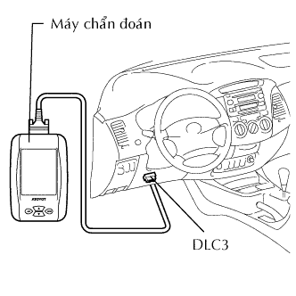

HỆ THỐNG PHANH CHỐNG HÃM CỨNG > KIỂM TRA HOẠT ĐỘNG |
| KIỂM TRA ĐÈN BÁO ABS |
 |
Khi bật khoá điện ON, kiểm tra rằng đèn báo ABS sáng lên và sau đó tắt đi trong thời gian xấp xỉ 3 giây.
| KIỂM TRA TÍN HIỆU CẢM BIẾN BẰNG CHẾ ĐỘ KIỂM TRA (Khi không dùng máy chẩn đoán) |
Quy trình cho chế độ kiểm tra:
Tắt khóa điện OFF.
Dùng SST, nối tắt các cực 12 (TC) và 4(CG) của giắc DLC3.
Khởi động động cơ.
Kiểm tra rằng đèn báo ABS nháy như chỉ ra trong hình vẽ.
Kiểm tra cảm biến tốc độ.
Lái xe thẳng về phía trước với tốc độ như trên. Sau đó kiểm tra rằng đền báo ABS như sau.
| Tốc độ xe | Kiểm tra | Đèn báo ABS |
| 3 đến 5 km/h (2 đến 3 mph) | Phản hồi của các cảm biến | Nháy |
| Lái xe 45 km/h (28 mph) trở lên | Sai lệch tín hiệu cảm biến | Tắt OFF |
Dừng xe.
 |
Đọc các mã DTC.
Dùng SST, nối tắt các cực 13 (TC) và 4(CG) của giắc DLC3.
Đọc số lần nháy của đèn báo ABS.
Sau khi kiểm tra, tháo SST ra khỏi các cực 13 (TC) và 4 (CG) của giắc DLC3.
| KIỂM TRA TÍN HIỆU CẢM BIẾN BẰNG CHẾ ĐỘ KIỂM TRA (Khi dùng máy chẩn đoán) |
|  |
Quy trình cho chế độ kiểm tra:
Tắt khóa điện OFF.
Kiểm tra rằng cần số ở vị trí P.
Nối máy chẩn đoán với giắc DLC3.
Khởi động động cơ.
Hãy chọn chế độ kiểm tra bằng cách dùng máy chẩn đoán.
Kiểm tra rằng đèn báo ABS nháy.
Khởi động động cơ.
Kiểm tra cảm biến tốc độ.
Lái xe thẳng về phía trước với tốc độ như trên. Sau đó kiểm tra rằng đền báo ABS như sau.
| Thử | Kiểm tra | Đèn báo ABS |
| 3 đến 5 km/h (2 đến 3 mph) | Phản hồi của các cảm biến | Nháy |
| Lái xe 45 km/h (28 mph) trở lên | Sai lệch tín hiệu cảm biến | Tắt OFF |
Dừng xe.
Đọc (các) mã DTC.
Nối máy chẩn đoán với giắc DLC3.
Bật khoá điện ON.
Đọc các mã DTC theo hướng dẫn trên màn hình máy chẩn đoán.